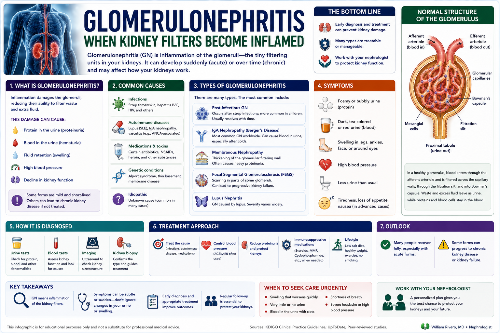
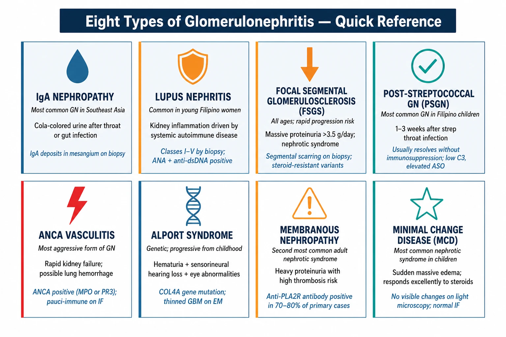
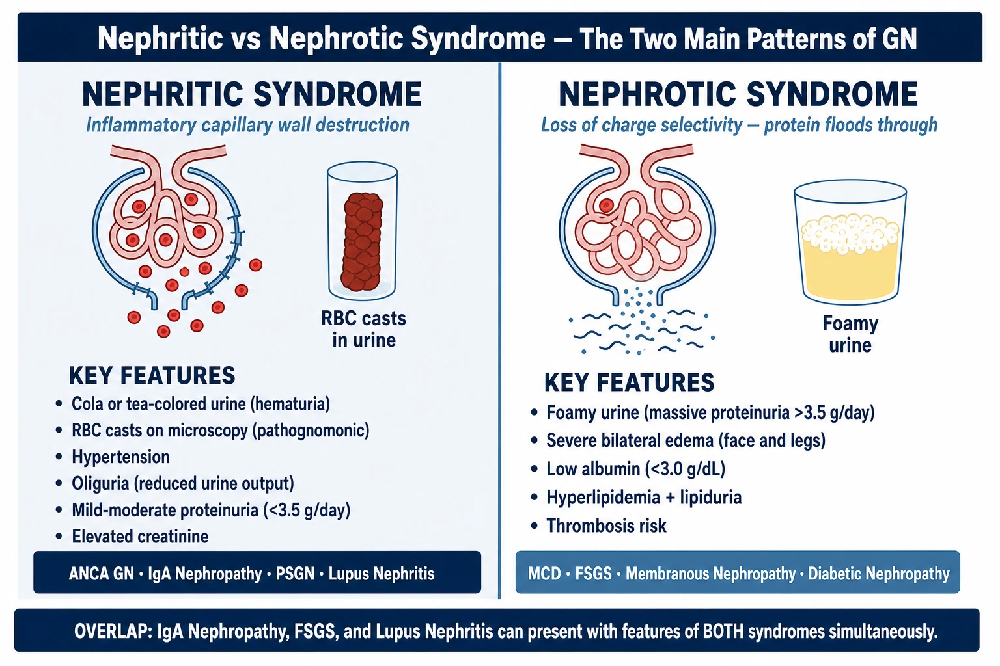
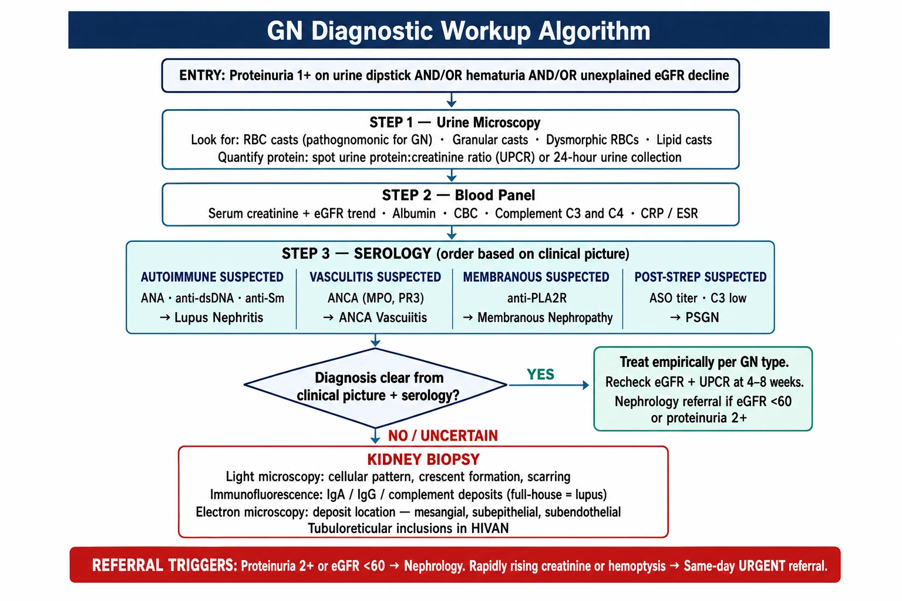
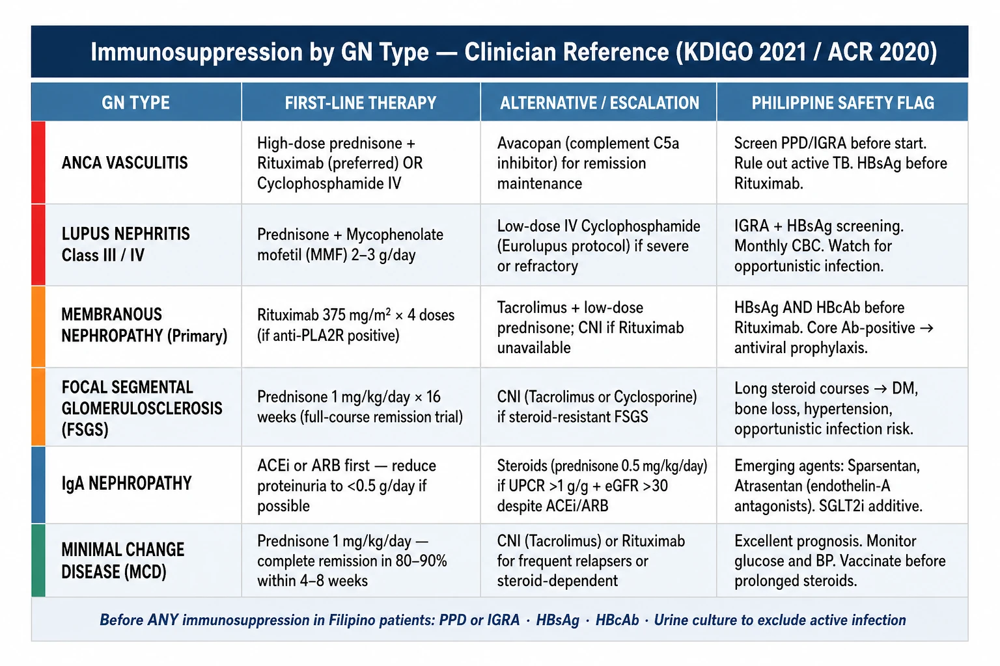
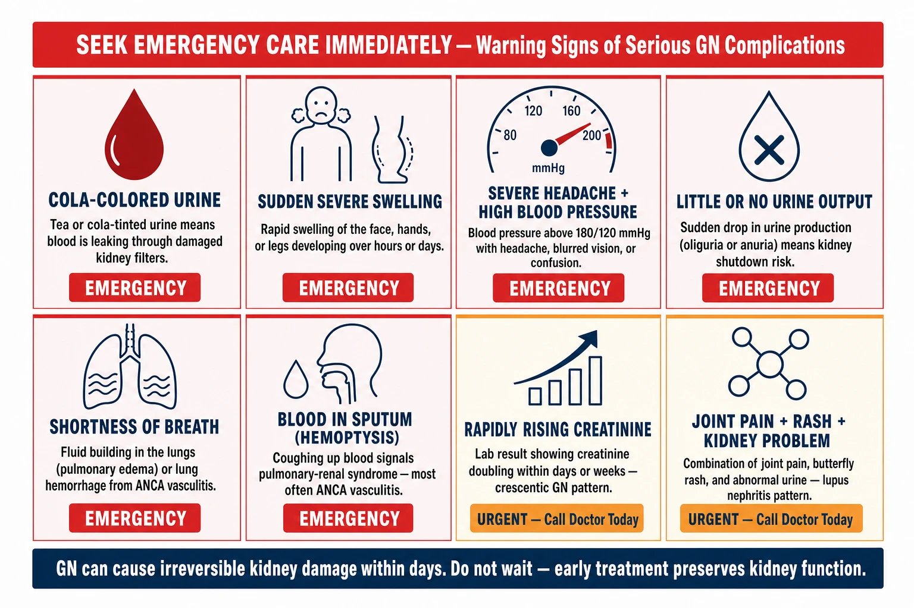

What is Glomerulonephritis?Ano ang Glomerulonephritis?Unsa ang Glomerulonephritis?Nano ing Glomerulonephritis?

Glomerulonephritis (GN) is inflammation of the glomeruli — the tiny filtering units inside each kidney. There are approximately one million glomeruli per kidney. When they become inflamed — by immune complexes, autoantibodies, infections, or genetic defects — they lose their ability to filter blood selectively, allowing protein and blood cells to leak into the urine while failing to remove waste properly.Ang Glomerulonephritis (GN) ay pamamaga ng mga glomeruli — ang maliliit na filtering unit sa loob ng bawat bato. Mayroong humigit-kumulang isang milyong glomeruli bawat bato. Kapag naging masakit sila — dahil sa immune complexes, autoantibodies, impeksyon, o genetic na depekto — nawawala nila ang kakayahang mag-filter ng dugo nang selektibo, na nagpapahintulot sa protina at mga selula ng dugo na tumagas sa ihi habang nabigo sa pag-aalis ng basura nang maayos.Ang Glomerulonephritis (GN) mao ang pagpama-o sa mga glomeruli — ang gamay nga mga filtering unit sulod sa matag kidney. Adunay mga usa ka milyon nga glomeruli matag kidney. Kung mapama-o sila — pinaagi sa immune complexes, autoantibodies, impeksyon, o genetic nga depekto — mawad-an sila sa abilidad sa pagfilter sa dugo nga selectibo, nga nagtugot sa protina ug mga selula sa dugo nga magtulo sa ihi.Ing Glomerulonephritis (GN) pamaga ning deng glomeruli — deng maliliit a filtering unit sa loob ning bawat batu. Maki mga isang milyon a glomeruli bawat batu. Nung mamaga ra — dahil sa immune complexes, autoantibodies, impeksyon, o genetic a depekto — nawawalan ra ning kakayahang mag-filter ning daya nang selektibo, a nagpapahintulot king protina at deng selula ning daya a tumagas king ihi.
The scale of the problemAng laki ng problemaAng sukod sa problemaIng kalawak ning problema
GN is the third leading cause of kidney failure worldwide — after diabetes and hypertension. In the Philippines, IgA nephropathy and lupus nephritis are among the most common forms. Many cases are diagnosed incidentally during routine urine testing before any symptoms appear.Ang GN ang ikatlong nangungunang sanhi ng kabiguan ng bato sa buong mundo — pagkatapos ng diabetes at hypertension. Sa Pilipinas, ang IgA nephropathy at lupus nephritis ay kabilang sa mga pinaka-karaniwang anyo. Maraming kaso ang na-diagnose nang hindi sinasadya sa panahon ng karaniwang pagsubok ng ihi bago lumabas ang anumang sintomas.Ang GN ikatulo nga nangungunang hinungdan sa kabiguan sa kidney sa tibuok kalibutan — human sa diabetes ug hypertension. Sa Pilipinas, ang IgA nephropathy ug lupus nephritis kabilang sa labing kasagaran nga mga porma. Daghang mga kaso ang na-diagnose nga aksidente sa panahon sa rutina nga pagsulay sa ihi sa wala pa ang bisan unsang sintomas.Ing GN ikatlong nangungunang dahilan ning kabiguang batu king buong mundo — pagkatapos ning diabetes at hypertension. King Pilipinas, ing IgA nephropathy at lupus nephritis kabilang sa pinaka-karaniwan a mga anyo. Daming kaso ang na-diagnose nang hindi sinasadya sa panahon ning karaniwang pagsubok ning ihi bago pa lumabas ing anumang sintomas.
Acute vs chronicAcute laban sa chronicAcute batok chronicAcute kontra chronic
GN can be acute (sudden onset over days to weeks, often post-infectious) or chronic (slowly progressive over months to years, often immune-mediated). Acute GN can sometimes recover completely; chronic GN requires long-term management to preserve kidney function.Ang GN ay maaaring maging acute (biglang pagsisimula sa loob ng mga araw hanggang linggo, madalas pagkatapos ng impeksyon) o chronic (dahan-dahang pag-unlad sa loob ng mga buwan hanggang taon, madalas immune-mediated). Ang acute GN ay maaaring minsan gumaling nang buo; ang chronic GN ay nangangailangan ng pangmatagalang pamamahala upang mapanatili ang pag-andar ng bato.Ang GN mahimong maging acute (kalit nga pagsugod sulod sa mga adlaw hangtod semana, kasagaran pagkahuman sa impeksyon) o chronic (hinay-hinay nga pag-uswag sulod sa mga buwan hangtod tuig, kasagaran immune-mediated). Ang acute GN usahay makaayo nang hingpit; ang chronic GN nagkinahanglan og dugay nga pagdumala aron mapreserba ang pag-andar sa kidney.Ing GN maaaring maging acute (biglang pagsisimula sa loob ning deng araw hanggang lingo, madalas pagkatapos ning impeksyon) o chronic (dahan-dahang pag-unlad sa loob ning deng bulan hanggang taon, madalas immune-mediated). Ing acute GN maaaring maminsan gumaling nang buo; ing chronic GN kailangan ning pangmatagalang pamamahala para mapanatili ing pag-andar ning batu.
Understanding the Glomerulus — The Target of InflammationPag-unawa sa Glomerulus — Ang Target ng PamamagaPagsabut sa Glomerulus — Ang Target sa Pagpama-oPag-unawa king Glomerulus — Ing Target ning Pamaga
In glomerulonephritis, immune complexes, antibodies, or direct cellular immune attack deposit in the glomerular capillary wall — triggering complement activation, neutrophil infiltration, and cytokine release that physically damages the filtration membrane. The result: loss of selective filtration, with protein (normally excluded) and red blood cells leaking into the urine.Sa glomerulonephritis, ang mga immune complex, antibody, o direktang cellular immune attack ay nagdeposito sa glomerular capillary wall — nagti-trigger ng complement activation, neutrophil infiltration, at cytokine release na pisikal na nakakasama sa filtration membrane. Ang resulta: pagkawala ng selective filtration, na may protina at mga pulang selula ng dugo na tumatagos sa ihi.Sa glomerulonephritis, ang mga immune complex, antibody, o direkta nga cellular immune attack nagdeposito sa glomerular capillary wall — nagatrigger sa complement activation, neutrophil infiltration, ug cytokine release nga pisikal nga nakadaot sa filtration membrane. Ang resulta: pagkawala sa selective filtration, nga ang protina ug pula nga mga selula sa dugo nagtulo sa ihi.King glomerulonephritis, deng immune complex, antibody, o direktang cellular immune attack nagdedeposito king glomerular capillary wall — nagti-trigger ning complement activation, neutrophil infiltration, at cytokine release a pisikal a nakakasama king filtration membrane. Ing resulta: pagkawala ning selective filtration, a maki protina at deng pulang selula ning daya a tumatagos king ihi.
Common Types of GlomerulonephritisMga Karaniwang Uri ng GlomerulonephritisMga Kasagarang Klase sa GlomerulonephritisDeng Karaniwang Klase ning Glomerulonephritis
GN is not a single disease — it is a group of disorders affecting the glomerulus through different mechanisms. Type determines treatment. A kidney biopsy is often needed to identify the specific type.Ang GN ay hindi iisang sakit — ito ay isang grupo ng mga karamdaman na nakakaapekto sa glomerulus sa pamamagitan ng iba't ibang mekanismo. Ang uri ay nagtatakda ng paggamot. Ang kidney biopsy ay madalas na kailangan para matukoy ang tiyak na uri.Ang GN dili usa ka sakit — usa kini ka grupo sa mga karamdaman nga nakaapekto sa glomerulus pinaagi sa lain-laing mekanismo. Ang klase naghatag sa pagtambal. Ang kidney biopsy kasagaran gikinahanglan para mahibaloan ang piho nga klase.Ing GN hindi isang sakit — iti isang grupo ning deng karamdaman a nakakaapekto king glomerulus sa pamamagitan ning iba't ibang mekanismo. Ing klase nagtatakda ning paggamot. Ing kidney biopsy madalas kailangan para matukoy ing tiyak a klase.
IgA Nephropathy (Berger's Disease)
Abnormal IgA antibodies deposit in the mesangium of the glomerulus, activating complement and causing inflammation. Often presents after an upper respiratory infection with cola-colored urine (gross hematuria). Most common GN in Southeast Asia.Ang mga abnormal na IgA antibodies ay nagdedeposito sa mesangium ng glomerulus, nagti-trigger ng complement at nagdudulot ng pamamaga. Madalas nagpapakita pagkatapos ng impeksyon sa itaas na respiratory tract na may kulay-cola na ihi. Pinaka-karaniwang GN sa Southeast Asia.Ang mga abnormal nga IgA antibodies nagdeposito sa mesangium sa glomerulus, nag-trigger sa complement ug nagdala sa pamamaga. Kasagaran nagpakita human sa upper respiratory tract infection nga adunay kulay-cola nga ihi. Pinaka-kasagaran nga GN sa Southeast Asia.Deng abnormal a IgA antibodies nagdedeposito king mesangium ning glomerulus, nagti-trigger ning complement at nagdudulot ning pamamaga. Madalas nagpapakita pagkatapos ning impeksyon king itaas a respiratory tract a maki kulay-cola a ihi. Pinaka-karaniwan a GN king Southeast Asia.
Lupus Nephritis (LN)
Systemic lupus erythematosus (SLE) deposits immune complexes in the glomerulus. Ranges from mild mesangial changes (Class I–II) to severe diffuse proliferative GN (Class III–IV) requiring aggressive immunosuppression. Common in young Filipino women.Ang systemic lupus erythematosus (SLE) ay nagdedeposito ng immune complexes sa glomerulus. Mula sa banayad na mesangial changes (Class I–II) hanggang sa matinding diffuse proliferative GN (Class III–IV) na nangangailangan ng aggressive immunosuppression. Karaniwan sa mga batang Pilipinang babae.Ang systemic lupus erythematosus (SLE) nagdeposito sa immune complexes sa glomerulus. Gikan sa banayad nga mesangial changes (Class I–II) hangtod sa grabe nga diffuse proliferative GN (Class III–IV) nga nagkinahanglan og aggressive immunosuppression. Kasagaran sa mga batang Pilipinang babae.Ing systemic lupus erythematosus (SLE) nagdedeposito ning immune complexes king glomerulus. Mula king banayad a mesangial changes (Class I–II) hanggang king malang diffuse proliferative GN (Class III–IV) a nangangailangan ning aggressive immunosuppression. Karaniwan king deng batang Pilipinang babai.
Focal Segmental Glomerulosclerosis (FSGS)
Scarring of segments of some glomeruli — caused by obesity, hyperfiltration, viral infection (HIV, parvovirus), or genetic podocyte defects. Presents with heavy proteinuria (>3.5 g/day), edema, and low albumin. Can progress rapidly to kidney failure.Pag-ukit ng mga segment ng ilang glomeruli — dulot ng obesity, hyperfiltration, viral infection (HIV, parvovirus), o genetic na podocyte defects. Nagpapakita ng mabigat na proteinuria (>3.5 g/day), edema, at mababang albumin. Maaaring mabilis na magprogress sa pagpalya ng bato.Pag-ukit sa mga segment sa pipila ka glomeruli — gidugang sa obesity, hyperfiltration, viral infection (HIV, parvovirus), o genetic nga podocyte defects. Nagpakita og bug-at nga proteinuria (>3.5 g/day), edema, ug ubos nga albumin. Mahimong dali magprogress sa pagpalya sa kidney.Pag-ukit ning deng segment ning deng glomeruli — dulot ning obesity, hyperfiltration, viral infection (HIV, parvovirus), o genetic a podocyte defects. Nagpapakita ning mabigat a proteinuria (>3.5 g/day), edema, at mababang albumin. Maaaring mabilis makaprogress king pagpalya ning batu.
Post-Streptococcal GN (PSGN)
Follows Group A Streptococcus throat or skin infection by 1–3 weeks. Immune complexes deposit in the glomerulus. Presents with sudden hematuria, hypertension, and edema — the "nephritic syndrome." Most common GN in Filipino children. Usually resolves spontaneously.Sumusunod sa impeksyon ng Group A Streptococcus sa lalamunan o balat sa loob ng 1–3 linggo. Ang immune complexes ay nagdedeposito sa glomerulus. Nagpapakita ng biglang hematuria, hypertension, at edema — ang "nephritic syndrome." Pinaka-karaniwang GN sa mga Pilipinong bata. Karaniwang nawawala nang kusa.Nagsunod sa impeksyon sa Group A Streptococcus sa tutunlan o panit sulod sa 1–3 ka semana. Ang immune complexes nagdeposito sa glomerulus. Nagpakita og kalit nga hematuria, hypertension, ug edema — ang "nephritic syndrome." Pinaka-kasagaran nga GN sa mga Pilipinong bata. Kasagaran nawawala nang kaugalingon.Sumusunod king impeksyon ning Group A Streptococcus king lalamunan o balat king loob ning 1–3 lingo. Deng immune complexes nagdedeposito king glomerulus. Nagpapakita ning biglang hematuria, hypertension, at edema — ing "nephritic syndrome." Pinaka-karaniwan a GN king deng Pilipinong anak. Karaniwang nawawala nang kusa.
Pauci-Immune (ANCA) GN
Anti-neutrophil cytoplasmic antibodies (PR3-ANCA or MPO-ANCA) cause necrotizing glomerulonephritis without immune complex deposits — the most aggressive form. Can destroy kidney function in weeks to months. Also causes lung hemorrhage (pulmonary-renal syndrome).Ang mga anti-neutrophil cytoplasmic antibodies (PR3-ANCA o MPO-ANCA) ay nagdudulot ng necrotizing glomerulonephritis nang walang immune complex deposits — ang pinaka-agresibong anyo. Maaaring masira ang pag-andar ng bato sa loob ng mga linggo hanggang buwan. Nagdudulot din ng lung hemorrhage (pulmonary-renal syndrome).Ang mga anti-neutrophil cytoplasmic antibodies (PR3-ANCA o MPO-ANCA) nagdala sa necrotizing glomerulonephritis nga walay immune complex deposits — ang pinaka-agresibo nga porma. Mahimong masira ang pag-andar sa kidney sulod sa mga semana hangtod bulan. Nagdala usab sa lung hemorrhage (pulmonary-renal syndrome).Deng anti-neutrophil cytoplasmic antibodies (PR3-ANCA o MPO-ANCA) nagdudulot ning necrotizing glomerulonephritis nang wala ring immune complex deposits — ing pinaka-agresibong anyo. Maaaring masira ing pag-andar ning batu king loob ning deng lingo hanggang bulan. Nagdudulot din ning lung hemorrhage (pulmonary-renal syndrome).
Alport Syndrome
Genetic mutation in type IV collagen — the structural scaffold of the glomerular basement membrane. Progressive hematuria and proteinuria from childhood, with hearing loss and eye abnormalities. X-linked (most common), autosomal recessive, or dominant forms.Genetic mutation sa type IV collagen — ang estruktura ng glomerular basement membrane. Progresibong hematuria at proteinuria mula sa pagkabata, na may pagkawala ng pandinig at abnormalidad sa mata. X-linked (pinaka-karaniwan), autosomal recessive, o dominant na anyo.Genetic mutation sa type IV collagen — ang estruktura sa glomerular basement membrane. Progresibo nga hematuria ug proteinuria gikan sa pagkabata, uban sa pagkawala sa pandungog ug abnormalidad sa mata. X-linked (pinaka-kasagaran), autosomal recessive, o dominant nga porma.Genetic mutation king type IV collagen — ing estruktura ning glomerular basement membrane. Progresibong hematuria at proteinuria mula king pagkabata, a maki pagkawala ning pandinig at abnormalidad king mata. X-linked (pinaka-karaniwan), autosomal recessive, o dominant a anyo.
Membranous Nephropathy
Immune complexes (often anti-PLA2R antibodies) deposit under the glomerular basement membrane, causing the hallmark "spike and dome" pattern on biopsy. Second most common cause of nephrotic syndrome in adults. Can cause massive protein loss (>10 g/day) and thrombosis.Ang mga immune complex (kadalasan anti-PLA2R antibodies) ay nagdedeposito sa ilalim ng glomerular basement membrane, na nagdudulot ng katangiang "spike and dome" na pattern sa biopsy. Ikalawang pinaka-karaniwang sanhi ng nephrotic syndrome sa mga matatanda. Maaaring magdulot ng malaking pagkawala ng protina (>10 g/day) at thrombosis.Ang mga immune complex (kasagaran anti-PLA2R antibodies) nagdeposito sa ilalim sa glomerular basement membrane, nagdala sa timailhang "spike and dome" nga pattern sa biopsy. Ikaduha nga pinaka-kasagaran nga hinungdan sa nephrotic syndrome sa mga hamtong. Mahimong magdala sa dako nga pagkawala sa protina (>10 g/day) ug thrombosis.Deng immune complex (kadalasan anti-PLA2R antibodies) nagdedeposito sa ilalim ning glomerular basement membrane, nagdudulot ning katangiang "spike and dome" a pattern king biopsy. Ikalawang pinaka-karaniwan a sanhi ning nephrotic syndrome king deng matatanda. Maaaring magdulot ning malaking pagkawala ning protina (>10 g/day) at thrombosis.
Minimal Change Disease (MCD)
Normal appearance on light microscopy — only electron microscopy reveals effacement of podocyte foot processes. Causes sudden-onset massive proteinuria with anasarca. Most common nephrotic syndrome in children; responds excellently to steroids. In adults, can be secondary to NSAIDs or lymphoma.Normal na hitsura sa light microscopy — ang electron microscopy lamang ang nagpapakita ng effacement ng podocyte foot processes. Nagdudulot ng biglaang malaking proteinuria na may anasarca. Pinaka-karaniwang nephrotic syndrome sa mga bata; mahusay na tumutugon sa steroids. Sa mga matatanda, maaaring secondary sa NSAIDs o lymphoma.Normal nga hitsura sa light microscopy — ang electron microscopy lamang ang nagpakita sa effacement sa podocyte foot processes. Nagdala sa kalit nga dako nga proteinuria uban sa anasarca. Pinaka-kasagaran nga nephrotic syndrome sa mga bata; maayo kaayo nagtubag sa steroids. Sa mga hamtong, mahimong secondary sa NSAIDs o lymphoma.Normal a hitsura king light microscopy — ing electron microscopy lamang ing nagpapakita ning effacement ning podocyte foot processes. Nagdudulot ning biglang malaking proteinuria a maki anasarca. Pinaka-karaniwan a nephrotic syndrome king deng anak; mahusay a tumutulong sa steroids. King deng matatanda, maaaring secondary king NSAIDs o lymphoma.

Eight major GN types at a glance — who they affect, their defining clinical feature, and the distinguishing finding that sets each apart. Philippine-context notes included.Walong pangunahing uri ng GN sa isang sulyap — kung sino ang apektado, ang kanilang natatanging klinikal na katangian, at ang nagtatangi sa bawat isa.Walo ka pangunahing klase sa GN sa usa ka sulyap — kinsa ang apektado, ang ilang nag-una nga klinikal nga bahin, ug ang nagpahibalo sa matag usa.Walu a pangunahing klase ning GN king metung a sulyap — sino ing apektado, ing kanilang natatanging klinikal a katangian, at ing nagtatangi king bawat isa.
The Two Main Syndromes — Nephritic vs NephroticAng Dalawang Pangunahing Sindrom — Nephritic laban sa NephroticAng Duha ka Pangunahing Sindrom — Nephritic batok NephroticIng Adwang Pangunahing Sindrom — Nephritic kontra Nephrotic
GN presents in two classic patterns that reflect different types of glomerular injury. Recognizing the pattern helps guide urgent investigation.Ang GN ay nagpapakita sa dalawang klasikong pattern na sumasalamin sa iba't ibang uri ng pinsala sa glomerular. Ang pagkilala ng pattern ay nakakatulong na gabayan ang agarang pagsisiyasat.Ang GN nagpakita sa duha ka klasiko nga pattern nga nagpakita sa lain-laing klase sa kadaot sa glomerular. Ang pagkilala sa pattern nakatulong aron gabayan ang dinalian nga pagsusi.Ing GN nagpapakita king adwang klasikong pattern a sumasalamin king iba't ibang klase ning pinsala king glomerular. Ing pagkilala ning pattern nakakatulong a gabayan ing agarang pagsisiyasat.
The nephritic syndrome reflects inflammatory destruction of capillary walls (blood leaks out). The nephrotic syndrome reflects loss of charge selectivity (protein leaks out). Some GN types can show features of both simultaneously (nephritic-nephrotic overlap).

Nephritic syndrome (left) versus nephrotic syndrome (right) — comparing hallmark findings, key lab values, and which GN types cause each pattern. Some diseases produce features of both.Nephritic syndrome (kaliwa) kumpara sa nephrotic syndrome (kanan) — naghahambing ng mga pangunahing natuklasan, mahahalagang halaga ng lab, at kung aling uri ng GN ang nagdudulot ng bawat pattern.Nephritic syndrome (wala) kontra nephrotic syndrome (tuo) — nagkumpara sa mga pangunahing nakit-an, importanteng mga halor sa lab, ug kung unsang klase sa GN ang nagdala sa matag pattern.Nephritic syndrome (kaliwa) kontra nephrotic syndrome (kanan) — naghahambing ning deng pangunahing natuklasan, mahahalagang halaga ning lab, at kung nung klase ning GN ing nagdudulot ning bawat pattern.
How Glomerulonephritis is DiagnosedPaano Nadi-diagnose ang GlomerulonephritisUnsaon Pagdiagnose ang GlomerulonephritisPanung Ina-diagnose ing Glomerulonephritis
| TestPagsusuriPagsusiPagsusuri | What it showsAno ang ipinapakitaUnsa ang gipakitaNano ing ipinapakita | Key findings in GNMahahalagang natuklasan sa GNImportante nga mga nakit-an sa GNMahahalagang natuklasan king GN |
|---|---|---|
| Urinalysis + microscopy | Protein, blood, casts in urine | RBC casts = pathognomonic of glomerulonephritis. Dysmorphic RBCs confirm glomerular origin of hematuria. |
| UACR / 24-hour urine protein | Quantity of protein leak | >3.5 g/day = nephrotic range; guides treatment urgency and monitoring. |
| Serum creatinine / eGFR | Kidney function baseline | Rapidly rising creatinine (crescentic GN, ANCA) requires emergency biopsy and treatment. |
| Complement (C3, C4, CH50) | Immune complex–mediated GN | Low C3 in post-streptococcal GN and lupus nephritis. Normal in IgA, FSGS, ANCA. |
| ANA, anti-dsDNA | Lupus nephritis screening | Positive ANA + anti-dsDNA + low complement = lupus nephritis until proven otherwise. |
| ANCA (PR3, MPO) | ANCA-associated vasculitis | Positive MPO-ANCA = MPA; Positive PR3-ANCA = GPA (Wegener's). Rapidly progressive GN. |
| Anti-PLA2R antibody | Membranous nephropathy | Positive in ~70% of primary membranous nephropathy. Guides rituximab therapy decision. |
| ASO titer / throat culture | Post-streptococcal GN | Elevated ASO confirms recent streptococcal infection in context of nephritic syndrome. |
| Kidney biopsy | Definitive diagnosis | Gold standard. Light microscopy + immunofluorescence + electron microscopy classify the exact GN type. Required for most non-obvious GN before starting immunosuppression. |

Step-by-step diagnostic algorithm: from the initial urine dipstick finding through serological panels to the kidney biopsy decision — with referral triggers at the bottom.Hakbang-hakbang na algorithm sa diagnosis: mula sa paunang resulta ng urine dipstick sa pamamagitan ng mga serological panel hanggang sa desisyon ng kidney biopsy.Lakang-lakang nga algorithm sa diagnosis: gikan sa unang resulta sa urine dipstick pinaagi sa mga serological panel hangtod sa desisyon sa kidney biopsy.Hakbang-hakbang a algorithm king diagnosis: mula king paunang resulta ning urine dipstick sa pamamagitan ning deng serological panel hanggang king desisyon ning kidney biopsy.
The kidney biopsy — when and whyAng kidney biopsy — kailan at bakitAng kidney biopsy — kanus-a ug nganoIng kidney biopsy — kailan at bakit
A kidney biopsy is a minor procedure where a small needle retrieves a sliver of kidney tissue under ultrasound guidance. It is safe in experienced hands and provides irreplaceable diagnostic information that blood tests alone cannot provide. Without a biopsy, treating GN is like treating a rash without knowing if it is lupus, psoriasis, or contact dermatitis — the drugs are completely different. Your nephrologist will recommend biopsy when the diagnosis is unclear and treatment decisions depend on it.Ang kidney biopsy ay isang menor na pamamaraan kung saan ang isang maliit na karayom ay kumukuha ng isang piraso ng tissue ng bato sa ilalim ng ultrasound guidance. Ito ay ligtas sa mga bihasang kamay at nagbibigay ng hindi mapapalitang impormasyon sa diagnostic na hindi maaaring ibigay ng mga pagsusuri sa dugo lamang. Ang iyong nephrologist ay magrerekomenda ng biopsy kapag ang diagnosis ay hindi malinaw at ang mga desisyon sa paggamot ay nakasalalay dito.Ang kidney biopsy usa ka menor nga pamaagi diin ang usa ka gamay nga dagom nagkuha sa usa ka piraso sa tissue sa kidney ubos sa ultrasound guidance. Kini luwas sa mga may kasinatian nga kamot ug naghatag og dili mapulihan nga impormasyon sa diagnostic nga dili maabot sa mga pagsusi sa dugo lamang. Ang imong nephrologist magrekomenda og biopsy kung ang diagnosis dili klaro ug ang mga desisyon sa pagtambal nagdepende niini.Ing kidney biopsy metung a menor a pamamaraan a maki maliet a karayom a kumukuha ning metung a piraso ning tissue ning batu sa ilalim ning ultrasound guidance. Iti ligtas king deng bihasang kamay at nagbibigay ning hindi mapapalitang impormasyon sa diagnostic a hindi maabot ning deng pagsusuri sa daya lamang. Ing nephrologist mu magrerekomenda ning biopsy nung ing diagnosis ali malinaw at ing deng desisyon sa paggamot nakasalalay dito.
Treating GlomerulonephritisPaggamot ng GlomerulonephritisPagtambal sa GlomerulonephritisPaggamot ning Glomerulonephritis
GN treatment has two components: general renoprotective measures (used in all GN) and disease-specific immunosuppression (targeted to the underlying type).Ang paggamot ng GN ay may dalawang bahagi: pangkalahatang renoprotective na hakbang (ginagamit sa lahat ng GN) at disease-specific na immunosuppression (nakatarget sa pinagbabatayan na uri).Ang pagtambal sa GN adunay duha ka bahin: kinatibuk-an nga renoprotective nga mga lakang (gigamit sa tanang GN) ug disease-specific nga immunosuppression (nakatarget sa nagpapailalom nga klase).Ing paggamot ning GN maki aduang bahagi: pangkalahatang renoprotective a mga hakbang (ginagamit king lahat ning GN) at disease-specific a immunosuppression (nakatarget king pinagbabatayan a uri).
Universal measures (all GN types)Pangkalahatang mga hakbang (lahat ng uri ng GN)Kinatibuk-an nga mga lakang (tanang klase sa GN)Pangkalahatang deng hakbang (lahat ning klase ning GN)
ACE inhibitor or ARB to reduce proteinuria and intraglomerular pressure. Blood pressure <130/80 mmHg. SGLT2 inhibitor (dapagliflozin) — now proven effective in proteinuric GN regardless of diabetes. Statin therapy. Sodium restriction. Avoidance of NSAIDs and nephrotoxins.ACE inhibitor o ARB upang mabawasan ang proteinuria at intraglomerular pressure. Presyon ng dugo <130/80 mmHg. SGLT2 inhibitor (dapagliflozin) — napatunayang epektibo na sa proteinuric GN anuman ang diabetes. Statin therapy. Pagbabawas ng sodium. Pag-iwas sa NSAIDs at nephrotoxins.ACE inhibitor o ARB aron mabawasan ang proteinuria ug intraglomerular pressure. Presyur sa dugo <130/80 mmHg. SGLT2 inhibitor (dapagliflozin) — napamatuod na nga epektibo sa proteinuric GN bisan unsa ang diabetes. Statin therapy. Pagpugong sa sodium. Paglikay sa NSAIDs ug nephrotoxins.ACE inhibitor o ARB para mabawasan ing proteinuria at intraglomerular pressure. Presyon ning daya <130/80 mmHg. SGLT2 inhibitor (dapagliflozin) — napatunayang epektibo na king proteinuric GN kahit anong diabetes. Statin therapy. Pagbabawas ning sodium. Pag-iwas king NSAIDs at nephrotoxins.
Immunosuppression (disease-specific)Immunosuppression (partikular sa sakit)Immunosuppression (espesipiko sa sakit)Immunosuppression (partikular sa sakit)
Corticosteroids (prednisone) — for MCD, IgA, lupus (mild–moderate), FSGS. Mycophenolate mofetil (MMF) — for lupus nephritis. Rituximab — for membranous nephropathy, ANCA vasculitis, lupus. Cyclophosphamide — for severe ANCA or lupus Class IV. Always weigh immunosuppression risk vs benefit.Corticosteroids (prednisone) — para sa MCD, IgA, lupus (banayad–katamtaman), FSGS. Mycophenolate mofetil (MMF) — para sa lupus nephritis. Rituximab — para sa membranous nephropathy, ANCA vasculitis, lupus. Cyclophosphamide — para sa matinding ANCA o lupus Class IV. Laging timbangin ang panganib kumpara sa benepisyo.Corticosteroids (prednisone) — alang sa MCD, IgA, lupus (banayad–katamtaman), FSGS. Mycophenolate mofetil (MMF) — alang sa lupus nephritis. Rituximab — alang sa membranous nephropathy, ANCA vasculitis, lupus. Cyclophosphamide — alang sa grabe nga ANCA o lupus Class IV. Kanunay timbangi ang peligro kontra sa benepisyo.Corticosteroids (prednisone) — para king MCD, IgA, lupus (mahinang–katamtamang), FSGS. Mycophenolate mofetil (MMF) — para king lupus nephritis. Rituximab — para king membranous nephropathy, ANCA vasculitis, lupus. Cyclophosphamide — para king malang ANCA o lupus Class IV. Laging timbangin ing panganib kontra sa benepisyo.

Disease-specific immunosuppression regimens per KDIGO 2021 and ACR 2020 guidelines — with Philippine-context safety flags for tuberculosis and hepatitis B reactivation risk before each agent.Mga regimen ng immunosuppression na tukoy sa sakit ayon sa KDIGO 2021 at ACR 2020 — na may mga palatandaan ng kaligtasan sa konteksto ng Pilipinas para sa tuberculosis at hepatitis B reactivation.Mga regimen sa immunosuppression nga piho sa sakit sumala sa KDIGO 2021 ug ACR 2020 — uban sa mga flag sa kaligtasan alang sa tuberculosis ug hepatitis B reactivation sa konteksto sa Pilipinas.Deng regimen ning immunosuppression a tukoy king sakit ayon king KDIGO 2021 at ACR 2020 — a maki deng palatandaan ning kaligtasan sa konteksto ning Pilipinas para king tuberculosis at hepatitis B reactivation.
Immunosuppression risks in Filipino patientsMga panganib ng immunosuppression sa mga pasyenteng PilipinoMga peligro sa immunosuppression sa mga pasyenteng PilipinoDeng panganib ning immunosuppression king deng pasyenteng Pilipino
- Tuberculosis reactivation — screen with PPD/IGRA before starting steroids or biologicsMuling pagkabuhay ng Tuberculosis — mag-screen gamit ang PPD/IGRA bago magsimula ng steroids o biologicsPagbalik sa Tuberculosis — mag-screen gamit ang PPD/IGRA sa wala pa sugdi ang steroids o biologicsTuberculosis reactivation — mag-screen gamit ing PPD/IGRA bago magsimula ning steroids o biologics
- Hepatitis B reactivation — check HBsAg before rituximab or cyclophosphamide; prophylactic antiviral if positiveMuling pagkabuhay ng Hepatitis B — suriin ang HBsAg bago ang rituximab o cyclophosphamide; prophylactic antiviral kung positiboPagbalik sa Hepatitis B — susihon ang HBsAg sa wala pa ang rituximab o cyclophosphamide; prophylactic antiviral kung positiboHepatitis B reactivation — susihin ing HBsAg bago ing rituximab o cyclophosphamide; prophylactic antiviral kung positibo
- Opportunistic infections — PCP prophylaxis with cotrimoxazole when on high-dose steroidsMga opportunistic infection — PCP prophylaxis gamit ang cotrimoxazole kapag nasa mataas na dosis ng steroidsMga opportunistic infection — PCP prophylaxis gamit ang cotrimoxazole kung naa sa taas nga dosis sa steroidsOpportunistic infections — PCP prophylaxis gamit ing cotrimoxazole nung nasa mataas a dosis ning steroids
- Diabetes and osteoporosis from long-term corticosteroid use — monitor HbA1c and bone densityDiabetes at osteoporosis mula sa pangmatagalang paggamit ng corticosteroid — subaybayan ang HbA1c at bone densityDiabetes ug osteoporosis gikan sa dugay nga paggamit sa corticosteroid — bantayan ang HbA1c ug bone densityDiabetes at osteoporosis mula sa pangmatagalang paggamit ning corticosteroid — bantayan ing HbA1c at bone density
When to Seek Immediate EvaluationKailan Humingi ng Agarang PagsusuriKanus-a Mangita og Dayon nga PagsusiKailan Humanap ning Agarang Pagsusuri

Eight warning signs that require same-day emergency care or urgent nephrology contact. GN can cause irreversible kidney damage within days — early action preserves function.Walong palatandaang nangangailangan ng agarang lunas sa parehong araw o agarang pakikipag-ugnayan sa nephrology. Ang GN ay maaaring magdulot ng hindi na mababalik na pinsala sa bato sa loob ng mga araw.Walo ka mga timailhan nga nanginahanglan og pareho nga adlaw nga emergency nga pag-atiman o dinalian nga kontak sa nephrology. Ang GN mahimong magdala og dili na mabawi nga kadaot sa kidney sulod sa mga adlaw.Walu a palatandaan a nangangailangan ning agarang lunas king parehong araw o agarang pakikipag-ugnayan king nephrology. Ing GN maaaring magdulot ning hindi na mababalik a pinsala king batu king loob ning deng araw.